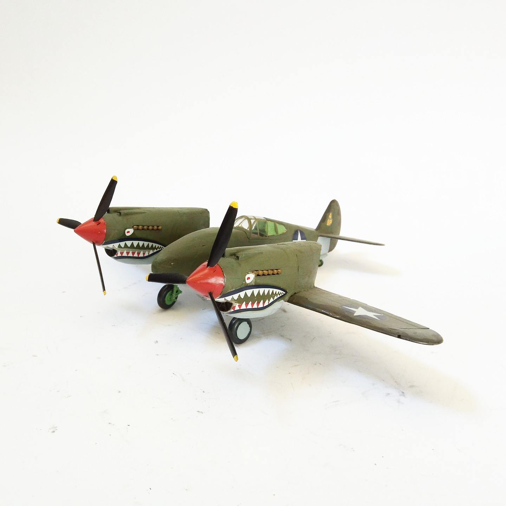
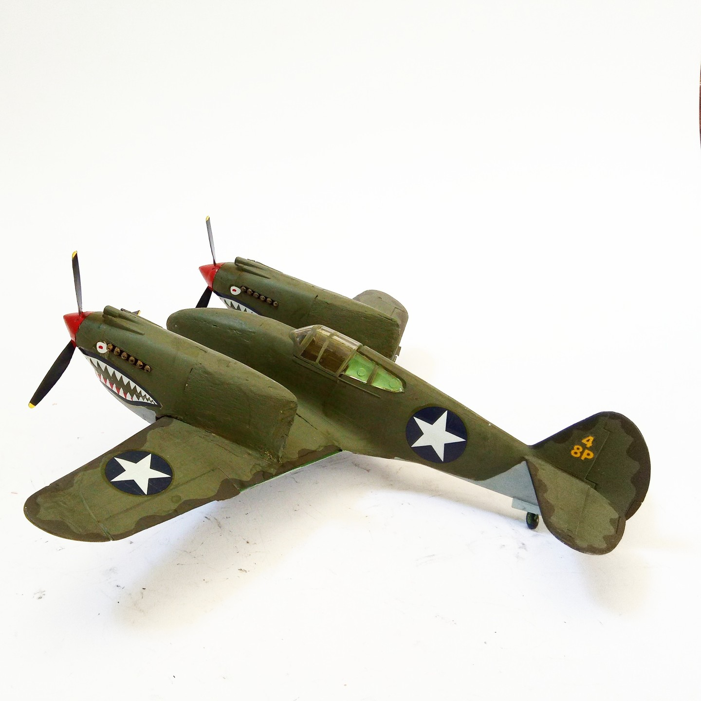

Aerei · scale model archive
Curtiss P40 'Twin Engine'
Curtiss P40 'Twin Engine' — Kit: Conversion. Scele: 1/48 Weird twin engine version of the P40, One photo exists but probably just a mock-up #1/48…

Photo gallery

English description
Scele: 1/48
Weird twin engine version of the P40, One photo exists but probably just a mock-up
#1/48 #Conversion
Descrizione italiana
Scele: 1/48.
Weird twin motore versione del P40, One photo exists but probably just una mock-up.